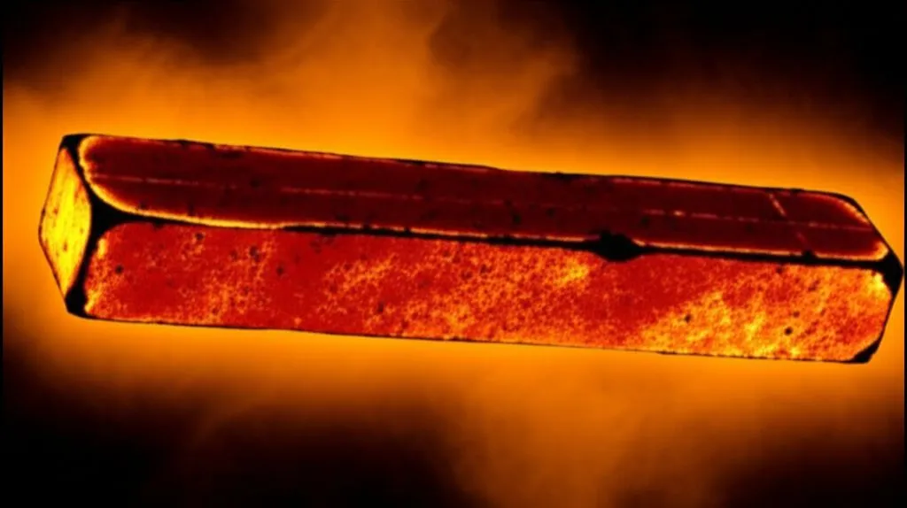

When extreme heat makes metal stronger
Originally posted on LinkedIn, February 24, 2026.
Researchers at Northwestern University overturned one of metallurgy’s most basic assumptions. We have always thought that heat softens metal, but they found that under extreme conditions, heat can actually make it stronger.
Instead of using a traditional hammer, they used a micro-ballistic device that fires particles at extreme speed. The result was metal stretched at 100 million percent per second. It made me question how many other rules we take for granted. AI is not the only field still producing new discoveries. Classical physics is too.
